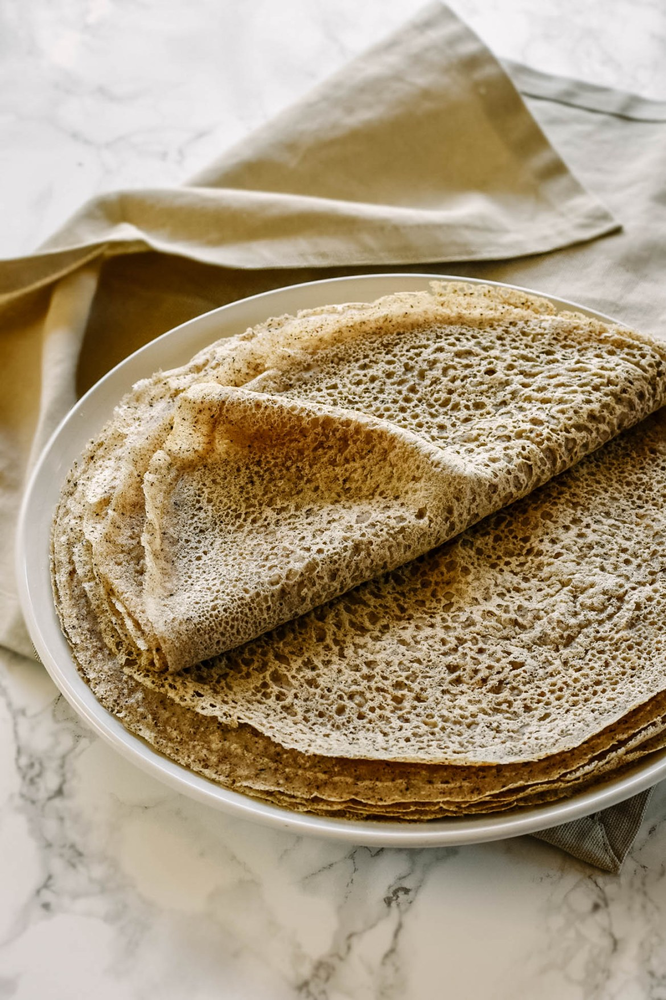

Buckwheat Crepes

Description
Buckwheat crêpes are very thin pancakes made out of buckwheat. They can be served with a wide variety of sweet and savory fillings and toppings.
Ingredients
- Buckwheat flour
- Water
- Salt
Steps
- Whisk the flour and salt.
- Gradually whisk in the water.
- Scoop the batter onto a hot griddle.
- Cook until lightly browned on the bottom.
- Flip and continue cooking until done on both sides.